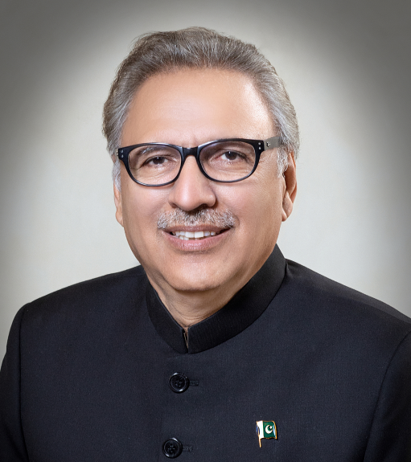
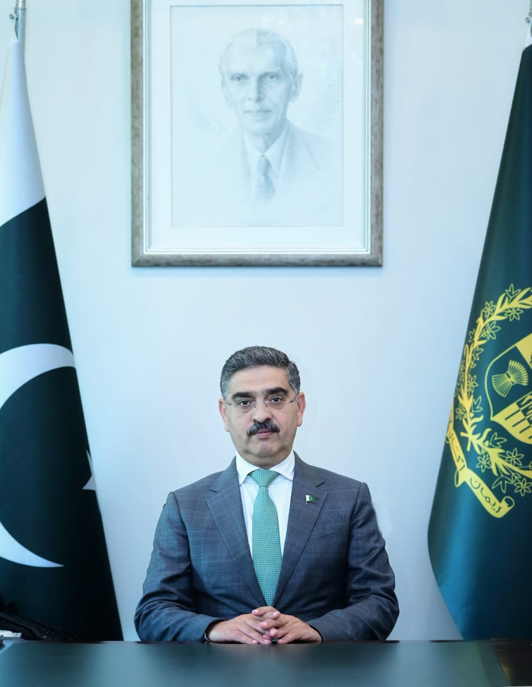

The Government of Pakistan operates as a federal parliamentary democratic republic. It comprises three branches: the executive, legislative, and judicial. The President serves as the ceremonial head of state, while the Prime Minister is the head of government. The National Assembly and Senate make up the bicameral legislature. Pakistan follows a mixed legal system, incorporating elements of Islamic law and English common law. The Constitution of Pakistan, adopted in 1973, serves as the supreme law of the land, providing the framework for governance and fundamental rights.

President Dr. Arif Alvi has been a renowned professional and has held many important positions in the field of Dentistry. He remained Dean of Orthodontics, Colle ge of Physicians and Surgeons of Pakistan, President, Pakistan Dental Association (1997-2001), Pakistan Association of Orthodontists (2005), Asia Pacific Dental Federation (2006-07) and Councilor of the World Dental Federation (2007-2013).
Read More
Mr. Anwaar-ul-Haq Kakar took oath of office as the 8th caretaker Prime Minister of Pakistan on 14th August 2023. He was elected as an independent senator from Balochistan province for a tenure of March 2018 to March 2024. He is also one of the founding members of Balochistan Awami Party (BAP) and was appointed as the central spokesperson of the party in 2018.
 Government of Pakistan
Government of Pakistan
 Government Services Portal
Government Services Portal Facebook
Facebook
 Twitter
Twitter